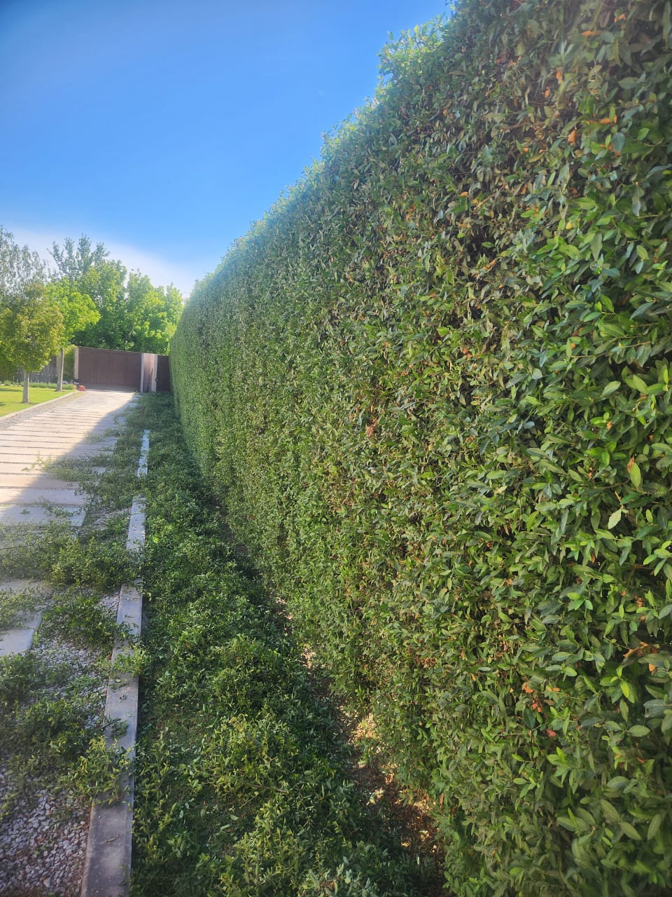

San Rafael, Mendoza
Mantenimiento de jardines y espacios verdes
Cortamos, podamos y cuidamos jardines de casas, empresas y barrios privados. Trabajo prolijo, en el día acordado y con presupuesto claro.
- Zona
- San Rafael y alrededores
- Atención
- Lunes a viernes, 8 a 18 h
- Equipo
- 3 personas, maquinaria propia

Servicios
Lo que hacemos
-
01
Corte de pasto
Parques, casas, terrenos, empresas y barrios privados. Terminación pareja y limpieza del lugar al finalizar.
-
02
Corte de cercos, grateur y otros
Mantenimiento y corte de cercos y grateur, con forma y altura uniformes. Contamos con andamios y escaleras para trabajos en altura.
-
03
Poda de plantas y árboles
Técnicas adecuadas para mantener la salud, la forma y la estética del jardín durante todo el año.
-
04
Fumigación y sulfatado
Prevención y control de plagas y enfermedades para que plantas y césped se mantengan sanos.
-
05
Siembra y resiembra
Armado y renovación de césped en parques y jardines, desde la preparación del suelo.
-
06
Mantenimiento integral
Un plan periódico que reúne todas las tareas, para que tu espacio verde esté siempre en condiciones.
Por qué elegirnos
Un jardín cuidado dice mucho de quien lo habita
Nos ocupamos de que el resultado se vea bien desde el primer día y se mantenga en el tiempo.
-
Atención personalizada
Escuchamos lo que necesitás y adaptamos el trabajo a cada espacio.
-
Presupuestos claros
Sabés qué incluye el trabajo y cuánto cuesta antes de empezar.
-
Puntualidad
Respetamos los días y horarios acordados.
-
Equipo estable
Tres personas que trabajan de manera constante y conocen cada tarea.
-
Equipamiento propio
Maquinaria y herramientas profesionales para cada trabajo, de la poda de altura a la fumigación.
-
Experiencia y responsabilidad
Años de trabajo en jardinería profesional en San Rafael, con compromiso y dedicación.
Equipamiento
Maquinaria y herramientas propias
Un equipo fijo de tres personas con todo lo necesario para resolver cada tarea sin depender de terceros.
3empleados de manera constante
- 1
Tractor cortacésped
Troy-Bilt, nuevo
- 3
Cortadoras de pasto de carro
Industriales, a explosión
- 4
Motoguadañas
Para bordes y zonas de difícil acceso
- 3+1
Tijeras de podar
3 a batería y 1 con alargue extensible
- 1+1
Cortadoras de cerco y grateur
1 larga y 1 corta de mano
- 3+1
Motosierras
3 motosierras y 1 extensible para poda de altura
- 2
Sopladoras
Limpieza prolija de hojas y restos
- 1
Mochila a explosión
Para sulfatar y desinfectar
- 1
Máquina para aplicar herbicida
Control de malezas
- +
Tijerones y herramientas varias
Y otras herramientas de mano
Pedí tu presupuesto sin compromiso
Contanos qué necesitás por WhatsApp y te respondemos a la brevedad.
Escribir por WhatsApp- +54 9 260 469-3699
- Zona de trabajo
- San Rafael, Mendoza
- Horario
- Lunes a viernes, 8:00 a 18:00
- @jardineriafp
- Jardinería F.P